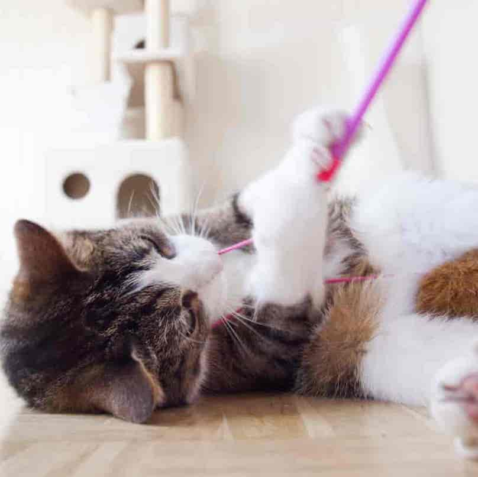
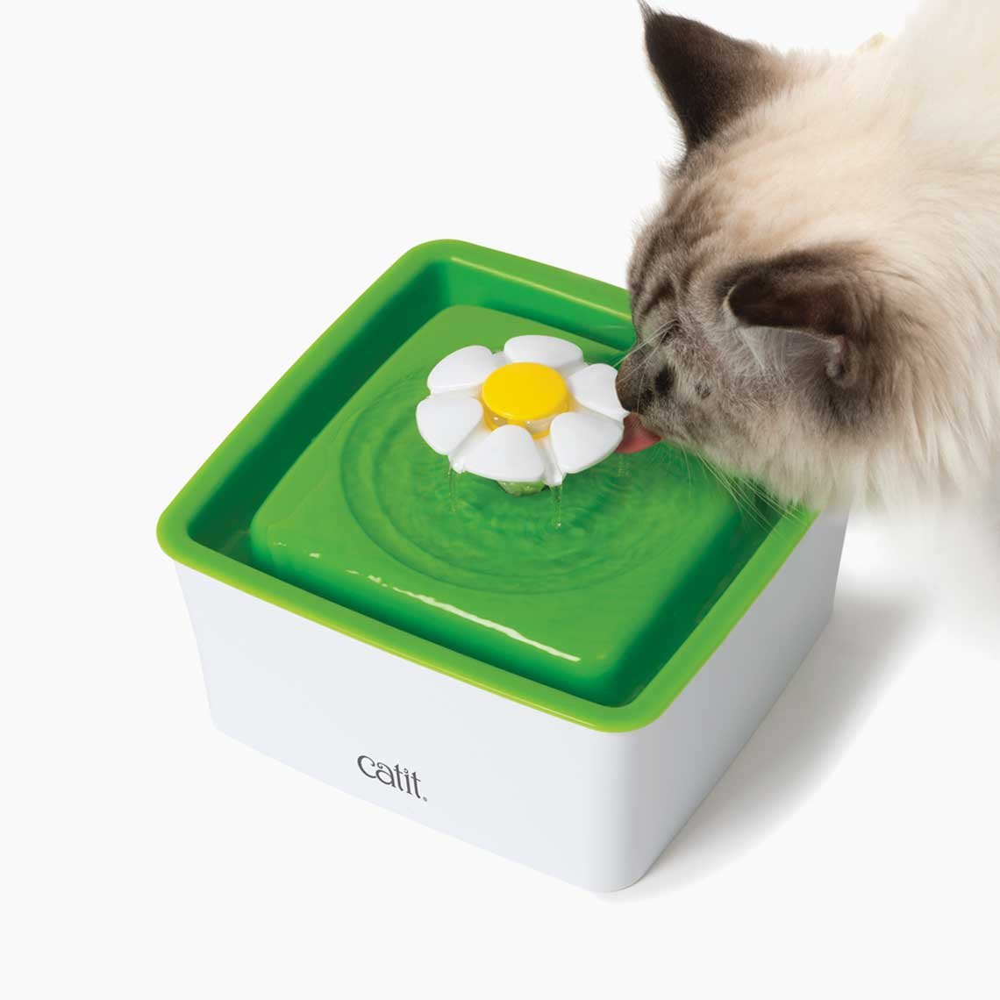

Overview: Cats are one of the most popular household pets in America because of how cute, loveable, and surprisingly low maintenence they are. Meeting your cat's daily needs takes very little effort. Indoor cats do not demand to be taken out on walks multiple times a day because of the convenience of the litter box, which you might have to clean out 3-4 times a day at most. Cats are ideal pets for busy owners that prefer to provide and care for their pet, exclusively from the comfort of their own home.
 Exercise & Diet: Your cat's quality of life is almost completely dependent on what you provide in terms of exercise and diet. Genetics play a role in their quality of life and lifespan as well, but ultimately how much effort you put in to make sure your cat is healthy determines how long they live. If you have an indoor cat, chances are they might not be getting the exercise they need without play sessions. We all love chubby kitties, they're impossible to resist, but unfortunately obese cats are at a greater risk for potentially fatal diseases such as diabetes, liver disease, arthritis, and pancreatitis. To prevent this, schedule play sessions with your cat. Two 15-20-minute play sessions daily are enough to keep your cat entertained and healthy. Diet is a crucial factor in your cat's quality of life. Adult cats should be fed twice a day or three times a day in smaller increments. Many people prefer to give their cats a combination of wet food and dry food, yielding the benefits of both foods. Wet food is the better alternative if your cat does not drink much water or has urinary or kidney problems. Wet food provides the water they lack to combat dehydration with kidney problems. Dry food, the other hand, can be tricky. Dry cat food from the local grocery store is often very high in carbohydrates, contributing to obesity, but it does help cats with dental problems since it helps scrape plaque off your cat's teeth. Finding a good balance of wet food and dry food to cater to your cat's specific needs can be very beneficial for your furry friend. With consistent exercise and healthy foods, indoor cats have the potential to live past 17 years of age!
Common Health Issues: Cats have a variety of common health issues that owners should be aware of including feline lower urinary tract diseases (FLUTD), vomiting, and diabetes. To combat FLUTD, owners should make sure their cat is drinking plenty of water. Many owners even purchase drinking fountains for their cat to encourage water intake. Many cats have hydration issues because of the fact that cats cannot see still water in a bowl, which prevents them from drinking water throughout the day. You might even notice them hitting their water bowl to move the water so that they could see it. This is because cats prefer flowing streams of water to drink out of, so if you're having problems getting your cat to stay hydrated, water fountains can encourage their water intake drastically. If your cat is still not drinking enough water, visit your veterinarian as there may be a more serious underlying issue. Vomiting is another very common health problem that every cat will face at one point in their life. Vomiting can be caused by a number of factors, which makes it tricky to pinpoint what the root cause of the vomiting is. For the most part, cats usually vomit hairballs, which can be treated with special foods that reduce hairballs and frequent brushing, this is especially true during the warmer months or if you have a long-haired cat. Vomiting can also be caused by sudden changes in your cat's diet. If you want to introduce a new food to your cat you must incorporate it into their original food very slowly because new foods often trigger stomach problems and vomiting. Although vomiting is usually minor, it can be due to a more serious underlying issue and you should contact your vet to determine whether your cat is suffering a more serious illness.